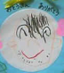

先ほど、お昼休みに交わされた時の会話
- よ「LT するんですか？何の話するんですか？」
- な「Python3 の porting の話だよ」
- よ「えっ、 @aodag さんの前で？」
- な「いーじゃん」

Join a User Group ( PyJUG )
勉強会に参加する
Event staff ( PyCon JP 2012 )
Document writing
Document translating to Japanese
Porting from Python2 to Python3
Python 3.3 can use u”” literal.
Python3
"あいうえお" == u"あいうえお"
"abc".encode('utf-8') == b"abc"
Python2
"abc" == b"abc"
u"あいうえお".encode('utf-8') == "あいうえお"
continue my case
$ git clone git://github.com/nakagami/reportlab.git
$ cd reportlab/tests
$ python3 runAll.py
$ git clone git://github.com/nakagami/Pillow.git
$ cd Pillow
$ git checkout py33py27
$ rm -rf build dist
$ python3 setup.py install
$ python3 selftests.py
http://2012.pycon.jp/program/sessions.html#session-16-1515-room433-ja
Happy Hacking